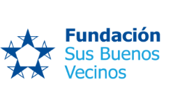
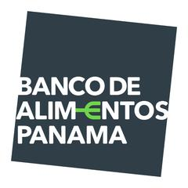
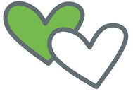
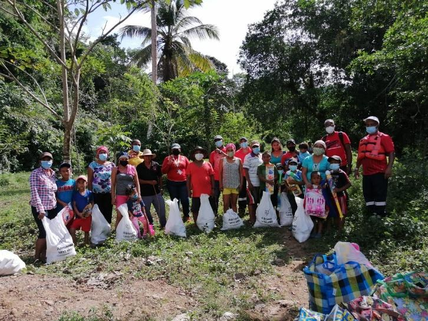
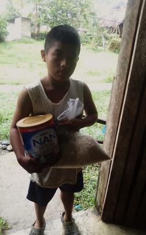
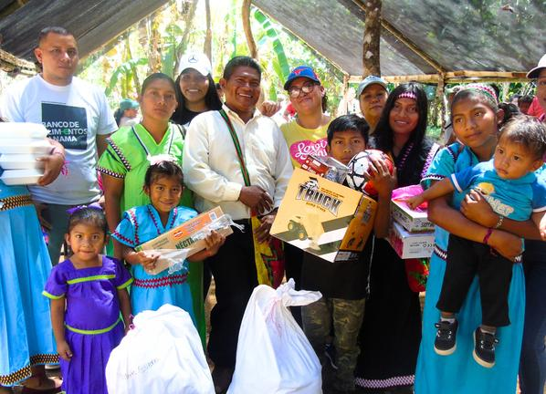
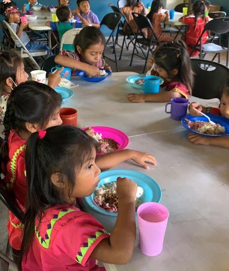

Informe de
Trazabilidad
De tu aporte al impacto: seguimos cada paso.


Lo que tu aporte hizo posible
Este informe convierte la donación de {{ company_name }} en una historia de impacto verificable: cuánto alimento se movilizó y a cuántas organizaciones llegó.
¿Dónde terminó tu donación?
La distribución se presenta de forma territorial para que el donante pueda ver dónde se concentró el aporte y cuánto llegó a cada zona reportada.
Del kilogramo al plato
Esta página traduce el dato operativo a una lectura sencilla para dirección y sostenibilidad: volumen movilizado y equivalencia en platos.
Los platos equivalentes se toman del campo de conversión reportado en la base. La trazabilidad territorial utiliza los kilos asignados por región.
La fotografía completa
Un buen informe de trazabilidad permite la lectura rápida y ofrece claridad sobre la distribución reportada.
| Región | kg asignados | participación |
|---|---|---|
| {{ item.region }} | {{ item.kg }} | {{ item.pct }}% |
| Grupo de edad | Personas | Lectura |
|---|---|---|
| {{ item.group }} | {{ item.count }} | {{ item.share }}% |

Gracias por
hacer trazable
el impacto.
Detrás de cada kilogramo hay una organización y una comunidad que recibe alimento.



